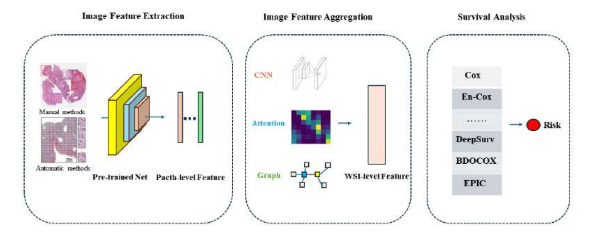

👋 自我介绍
我关注医学影像、人工智能系统与全栈工程，习惯从问题定义、实验验证一直做到可使用的软件系统。
当前工作聚焦双语 AI 语言评估平台。此前的研究覆盖数字病理、3D 医学图像分割、染色归一化与 WSI 生存预测。我希望把严谨的研究证据转化为稳定、可维护的产品能力。
🎓 教育背景
- 计算机科学理学硕士香港中文大学GPA 3.3/4.0，Academic Excellence Scholarship
- 软件工程工学学士北京邮电大学GPA 3.63/4.0，National Endeavor Scholarship
🧪 研究方向
医学影像分析、数字病理、多模态 AI、图神经网络、AI 教育系统
📝 代表性论文
SAStainDiff: Self-supervised Stain Normalization by Stain Augmentation using Denoising Diffusion Probabilistic Models
Biomedical Signal Processing and Control
WaveU3S: A Lightweight Wavelet Dual-Attention Unet for 3D Medical Image Segmentation
IEEE International Symposium on Biomedical Imaging
🔬 研究与项目

Deep Learning Based Methods in Whole Slide Image Survival Prediction: A Survey
系统梳理 150+ 篇论文与 64 种方法，提出三阶段框架，并在 5 个 TCGA 数据集上比较 10 种方法。
💼 工作经历
🛠 技术能力
- 人工智能
- PyTorch, GNN, Transformer, Medical Imaging
- 前端
- React, Vue, TypeScript
- 后端
- FastAPI, Java Spring Boot, PHP Laravel, Golang
- DevOps
- Linux, MySQL, Git, Docker, Bash, Playwright